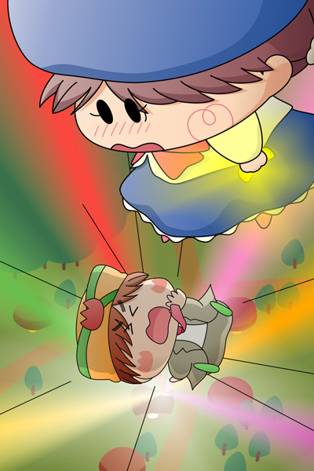

突然ギャアが空へと上がっていきました。
ギャアのしっぽにはソフトがぶらさがり、さらにソフトの足にマンボがぶらさがっています。
ソフト「お…重いぽよ…」
マンボ「怪盗チョコソフトめ、何てしぶといやつなんだ・・・」
ソフト「マンボくんの方こそ・・・」
マンボ「ここで手を離せば楽になるぞ」
ソフト「こんな高いところから落ちたらマンボくんも危ないぽよ」
マンボ「そ、そうだった・・・」
ソフト（でも・・・いったいどうしたらいいぽよ？）
二人は落ちないように必死になっています。
ギャアはそんな二人のことなど構わずに空を飛び続けています。
ふとマンボの頭に何かがよぎりました。
マンボ「そういえばこの声・・・どこかで聞いた覚えがあるんだよなぁ」
ソフト「ぎくっ。
そんなことないぽよ。
マンボくんのことは全然分からないぽよ」
マンボ「マンボくん？」
ソフト「あわわ、マ、マンボ刑事のことぽよ」
マンボ「まぁいい。
で、ダイヤを盗んでいったいどうするつもりなんだ？」
ソフト「それはマンボくんにも言えないぽよ」
二人の手はそろそろ限界が近づいてきました。
すると・・・。
ギャアの飛んでいる方向の先に、ソフトの喫茶店が見えてきました。
マンボ「ん？あの喫茶店は・・・」
ソフト「これはまずいぽよ！？
何とかしてギャアの行き先を変えないと・・・きゃあっ」
突然強い風が空中の二人を襲いました。
ソフトはバランスを崩したものの、何とかギャアにつかまっていられました。
が、マンボの手はソフトの足から離れてしまい・・・。
マンボ「うわ～～～～っ」
ソフト「マンボくんっ！！」

一瞬の出来事に、頭が真っ白になってしまったソフト。
気がつけばマンボの名前を叫び続けていました。
ソフト「マンボくん！マンボくん！」
マンボを助けたくても、助ける方法が思い浮かびません。
ソフト「もうだめぽよ・・・。
お願い！誰かマンボくんを助けてぽよ！」
その瞬間！
喫茶店から６色の光が飛び出し、ソフトの左手に握られているバナナダイヤも目がくらむほどの黄色い光を放ちました。
「その願い、私が承りましたでございますっ！」
終盤近くで新キャラ！？ストーリーに行き詰まってる感がものすごく漂いますが(^◇^;)、怪盗チョコソフトのラストへ向けてあと少しです。
夜の空中戦を描きたくて今回の絵になったのですが、地上のソフトの喫茶店から洩れる光が明る過ぎですね。。ぼかしの効果を多用したため、Illustratorがすごく重たくなってしまい、描くのにかなり時間がかかりました。それとよく分かりにくいかもしれませんが、ソフトの右手はギャアのしっぽにつかまっています。ソフトをもう少し斜めに傾ける必要があったかも。。
(2007/6/3)